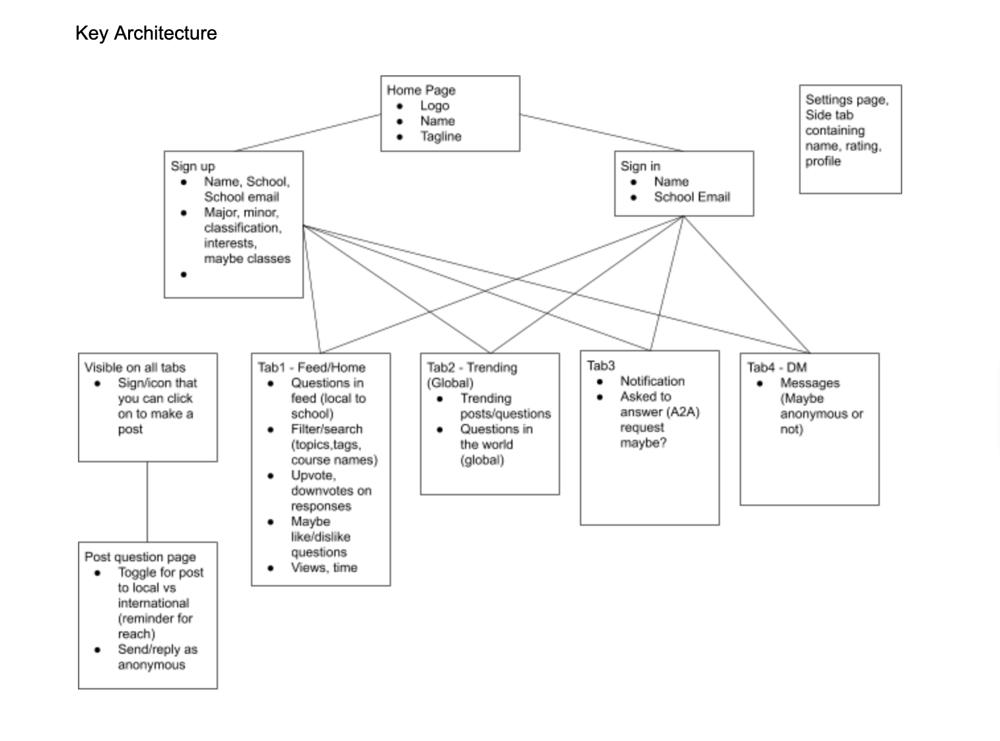
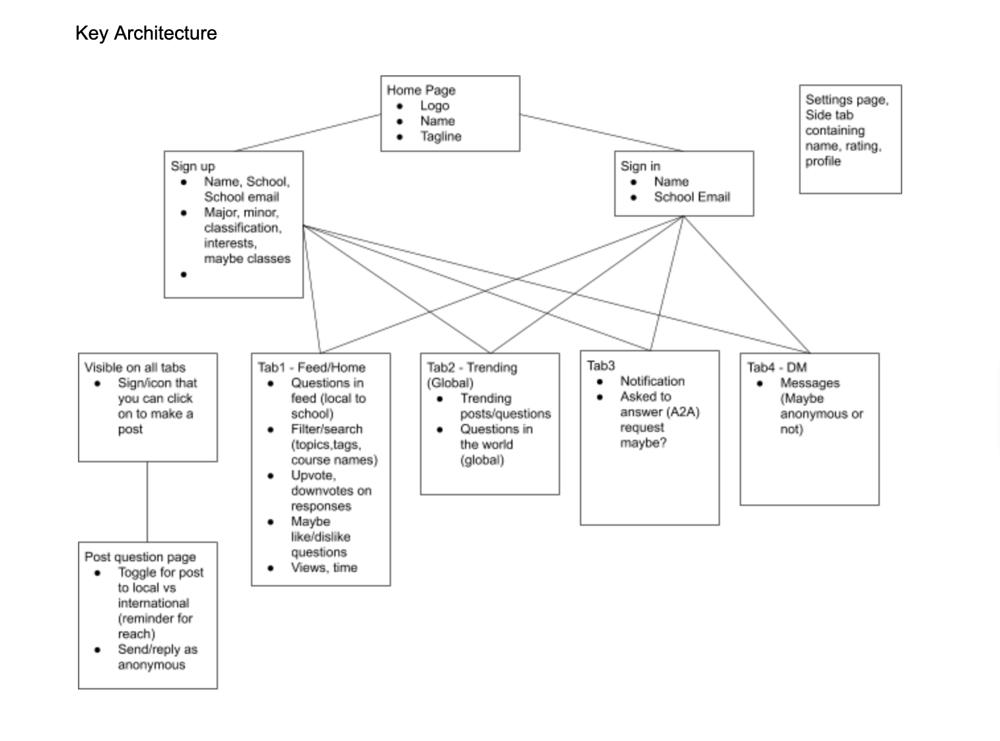

About the Project
Scool is a product that leverages current college students to answer other college students’ questions and provide support with campus-specific subject matter. My role as UX lead encompassed preparing a medium-fidelity prototype for a pitch competition of ed-tech applications.
The Problem
Students are unable to get help for their classes or in understanding concepts at the exact time they need it because the current tutoring system is inefficient and unreliable.
 

Design Preparation
After producing the application’s flowchart and a design brief with my team, I created this design system integrating Schools’ brand and solution. Selecting the swatch was my first step in assembling the system, followed by logo design, typography, attributes, and iconography. I selected the elephant motif since it is associated with knowledge and memory, blue is associated with education and knowledge while orange is its complimentary color. Icons and logos were designed in adobe illustrator. The sans serif font (Marcellus) was not used beyond this system, only the Lato type is in the wireframe. This design system was my starting point when resolving design challenges during the wire-framing process.

Medium Fidelity Prototype
The flow chart for Scool was modelled after social media applications. This design is user-friendly and familiar to the target audience of 18-30 year olds.
Use Case
- Make a post (ask a question) on the platform
- Respond to a post (answer a question) that shows up in your feed
- Message other users or create group chats.
- Get reward points through posting and responding to earn user-relevant coupons.
- User-based integrated rating system to verify credibility (Upvote and Downvote)
- Future artificial intelligence integration to facilitate prompt responses
Next Steps
The UX design and pitch was well received by judges on demo day, we were selected to move forward with the competition. In the coming weeks I will build the high fidelity wireframe and test it with a small group of users. View Wireframe in Figma